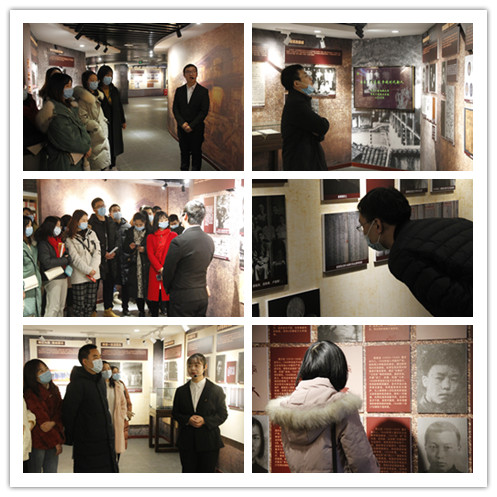

【供稿/党委教工部】为教育引导新进教职工当好红岩精神的忠实守护者、坚定传承者和自觉践行者，激励教师干事创业热情，12月22日下午，党委教工部组织新进教职工到合川校区红岩文化室参观学习。我校红岩精神讲解队罗鹏、黎员红同学为老师们作了专业解说。
跟随讲解员的讲解，老师们深情回顾了以周恩来同志为首的中共中央南方局和八路军办事处在嘉陵江畔的那段峥嵘岁月，深入学习了红岩精神的历史渊源、核心内涵与精神根基，在追寻革命先烈的足迹中体悟崇高革命精神。老师们参观了馆内相关革命文物、文献资料与历史图片，还详细了解了1938年10月至1947年3月期间中国共产党代表团、中共中央南方局在重庆的历史活动。
通过参观学习，大家纷纷表示，要坚持立德树人根本任务，把信仰的种子根植灵魂、把忠诚的基因融入血脉，在教育教学中继续发扬好红岩精神、讲好红岩故事，让爱国主义成为教育事业最靓丽的底色。
